Ladder diagrams are specialized schematics commonly used to document industrial control logic systems. They are called "ladder" diagrams because they resemble a ladder, with two vertical rails (supply power) and as many "rungs" (horizontal lines) as there are control circuits to represent. If we wanted to draw a simple ladder diagram showing a lamp that is controlled by a hand switch, it would look like this:
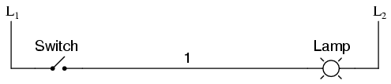
The "L1" and "L2" designations refer to the two poles of a 120 VAC supply, unless otherwise noted. L1 is the "hot" conductor, and L2 is the grounded ("neutral") conductor. These designations have nothing to do with inductors, just to make things confusing. The actual transformer or generator supplying power to this circuit is omitted for simplicity. In reality, the circuit looks something like this:
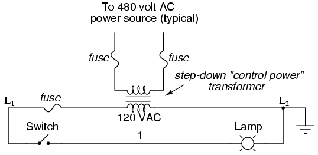
Typically in industrial relay logic circuits, but not always, the operating voltage for the switch contacts and relay coils will be 120 volts AC. Lower voltage AC and even DC systems are sometimes built and documented according to "ladder" diagrams:
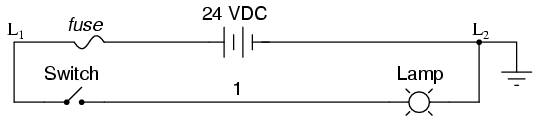
So long as the switch contacts and relay coils are all adequately rated, it really doesn't matter what level of voltage is chosen for the system to operate with.
Note the number "1" on the wire between the switch and the lamp. In the real world, that wire would be labeled with that number, using heat-shrink or adhesive tags, wherever it was convenient to identify. Wires leading to the switch would be labeled "L1" and "1," respectively. Wires leading to the lamp would be labeled "1" and "L2," respectively. These wire numbers make assembly and maintenance very easy. Each conductor has its own unique wire number for the control system that its used in. Wire numbers do not change at any junction or node, even if wire size, color, or length changes going into or out of a connection point. Of course, it is preferable to maintain consistent wire colors, but this is not always practical. What matters is that any one, electrically continuous point in a control circuit possesses the same wire number. Take this circuit section, for example, with wire #25 as a single, electrically continuous point threading to many different devices:
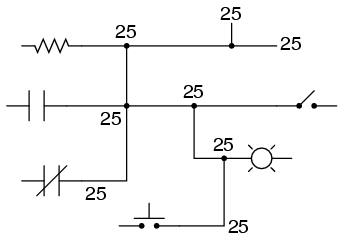
In ladder diagrams, the load device (lamp, relay coil, solenoid coil, etc.) is almost always drawn at the right-hand side of the rung. While it doesn't matter electrically where the relay coil is located within the rung, it does matter which end of the ladder's power supply is grounded, for reliable operation.
Take for instance this circuit:
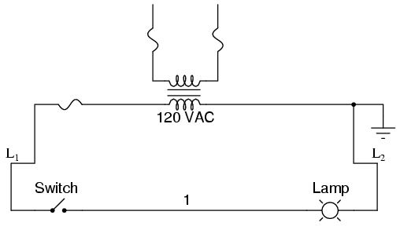
Here, the lamp (load) is located on the right-hand side of the rung, and so is the ground connection for the power source. This is no accident or coincidence; rather, it is a purposeful element of good design practice. Suppose that wire #1 were to accidently come in contact with ground, the insulation of that wire having been rubbed off so that the bare conductor came in contact with grounded, metal conduit. Our circuit would now function like this:
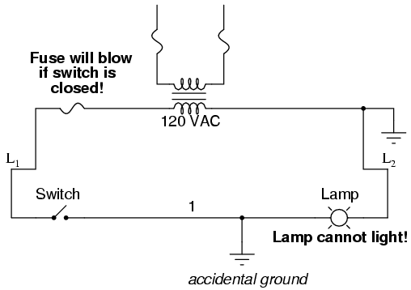
With both sides of the lamp connected to ground, the lamp will be "shorted out" and unable to receive power to light up. If the switch were to close, there would be a short-circuit, immediately blowing the fuse.
However, consider what would happen to the circuit with the same fault (wire #1 coming in contact with ground), except this time we'll swap the positions of switch and fuse (L2 is still grounded):
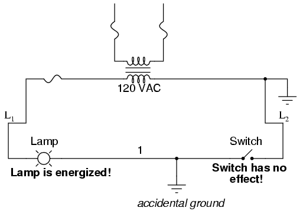
This time the accidental grounding of wire #1 will force power to the lamp while the switch will have no effect. It is much safer to have a system that blows a fuse in the event of a ground fault than to have a system that uncontrollably energizes lamps, relays, or solenoids in the event of the same fault. For this reason, the load(s) must always be located nearest the grounded power conductor in the ladder diagram.
We can construct simply logic functions for our hypothetical lamp circuit, using multiple contacts, and document these circuits quite easily and understandably with additional rungs to our original "ladder." If we use standard binary notation for the status of the switches and lamp (0 for unactuated or de-energized; 1 for actuated or energized), a truth table can be made to show how the logic works:
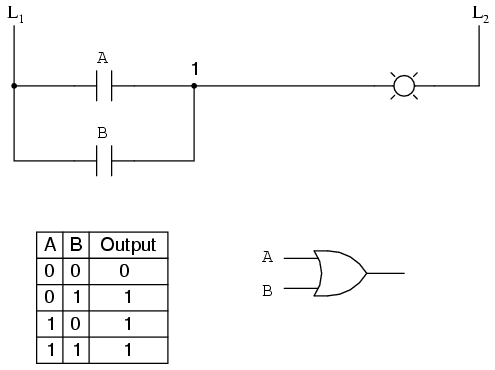
Now, the lamp will come on if either contact A or contact B is actuated, because all it takes for the lamp to be energized is to have at least one path for current from wire L1 to wire 1. What we have is a simple OR logic function, implemented with nothing more than contacts and a lamp.
We can mimic the AND logic function by wiring the two contacts in series instead of parallel:
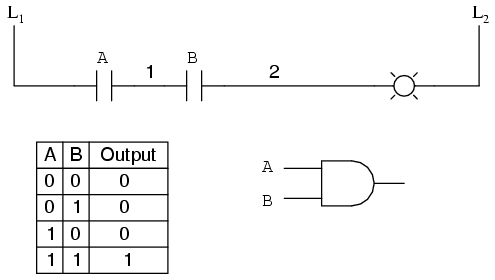
Now, the lamp energizes only if contact A and contact B are simultaneously actuated. A path exists for current from wire L1 to the lamp (wire 2) if and only if both switch contacts are closed.
The logical inversion, or NOT, function can be performed on a contact input simply by using a normally-closed contact instead of a normally-open contact:
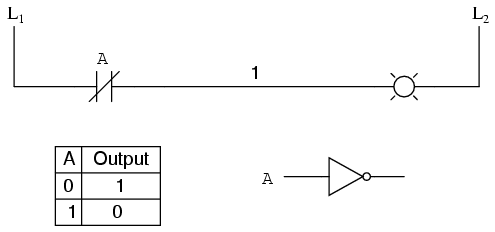
Now, the lamp energizes if the contact is not actuated, and de-energizes when the contact is actuated.
If we take our OR function and invert each "input" through the use of normally-closed contacts, we will end up with a NAND function. In a special branch of mathematics known as Boolean algebra, this effect of gate function identity changing with the inversion of input signals is described by DeMorgan's Theorem, a subject to be explored in more detail in a later chapter.
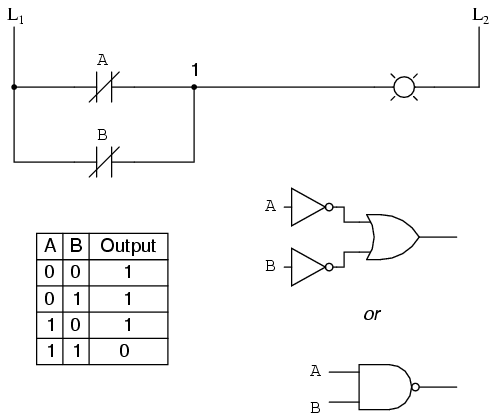
The lamp will be energized if either contact is unactuated. It will go out only if both contacts are actuated simultaneously.
Likewise, if we take our AND function and invert each "input" through the use of normally-closed contacts, we will end up with a NOR function:
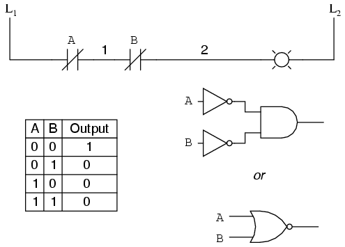
A pattern quickly reveals itself when ladder circuits are compared with their logic gate counterparts:
We can build combinational logic functions by grouping contacts in series-parallel arrangements, as well. In the following example, we have an Exclusive-OR function built from a combination of AND, OR, and inverter (NOT) gates:
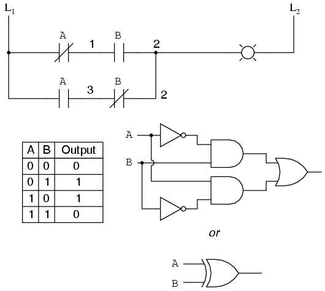
The top rung (NC contact A in series with NO contact B) is the equivalent of the top NOT/AND gate combination. The bottom rung (NO contact A in series with NC contact B) is the equivalent of the bottom NOT/AND gate combination. The parallel connection between the two rungs at wire number 2 forms the equivalent of the OR gate, in allowing either rung 1 or rung 2 to energize the lamp.
To make the Exclusive-OR function, we had to use two contacts per input: one for direct input and the other for "inverted" input. The two "A" contacts are physically actuated by the same mechanism, as are the two "B" contacts. The common association between contacts is denoted by the label of the contact. There is no limit to how many contacts per switch can be represented in a ladder diagram, as each new contact on any switch or relay (either normally-open or normally-closed) used in the diagram is simply marked with the same label.
Sometimes, multiple contacts on a single switch (or relay) are designated by a compound labels, such as "A-1" and "A-2" instead of two "A" labels. This may be especially useful if you want to specifically designate which set of contacts on each switch or relay is being used for which part of a circuit. For simplicity's sake, I'll refrain from such elaborate labeling in this lesson. If you see a common label for multiple contacts, you know those contacts are all actuated by the same mechanism.
If we wish to invert the output of any switch-generated logic function, we must use a relay with a normally-closed contact. For instance, if we want to energize a load based on the inverse, or NOT, of a normally-open contact, we could do this:
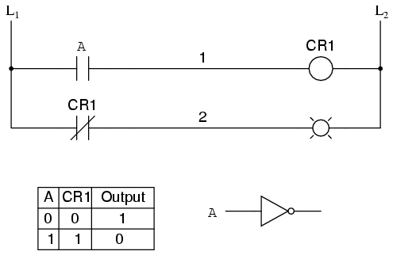
We will call the relay, "control relay 1," or CR1. When the coil of CR1 (symbolized with the pair of parentheses on the first rung) is energized, the contact on the second rung opens, thus de-energizing the lamp. From switch A to the coil of CR1, the logic function is noninverted. The normally-closed contact actuated by relay coil CR1 provides a logical inverter function to drive the lamp opposite that of the switch's actuation status.
Applying this inversion strategy to one of our inverted-input functions created earlier, such as the OR-to-NAND, we can invert the output with a relay to create a noninverted function:
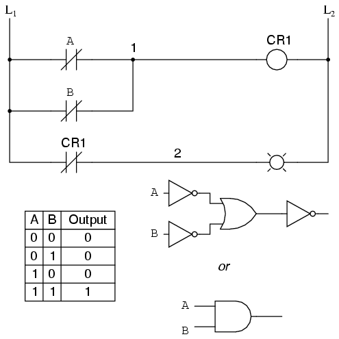
From the switches to the coil of CR1, the logical function is that of a NAND gate. CR1's normally-closed contact provides one final inversion to turn the NAND function into an AND function.
A practical application of switch and relay logic is in control systems where several process conditions have to be met before a piece of equipment is allowed to start. A good example of this is burner control for large combustion furnaces. In order for the burners in a large furnace to be started safely, the control system requests "permission" from several process switches, including high and low fuel pressure, air fan flow check, exhaust stack damper position, access door position, etc. Each process condition is called a permissive, and each permissive switch contact is wired in series, so that if any one of them detects an unsafe condition, the circuit will be opened:
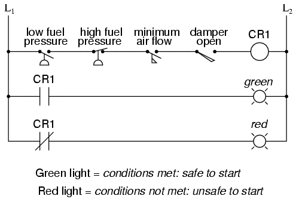
If all permissive conditions are met, CR1 will energize and the green lamp will be lit. In real life, more than just a green lamp would be energized: usually a control relay or fuel valve solenoid would be placed in that rung of the circuit to be energized when all the permissive contacts were "good:" that is, all closed. If any one of the permissive conditions are not met, the series string of switch contacts will be broken, CR2 will de-energize, and the red lamp will light.
Note that the high fuel pressure contact is normally-closed. This is because we want the switch contact to open if the fuel pressure gets too high. Since the "normal" condition of any pressure switch is when zero (low) pressure is being applied to it, and we want this switch to open with excessive (high) pressure, we must choose a switch that is closed in its normal state.
Another practical application of relay logic is in control systems where we want to ensure two incompatible events cannot occur at the same time. An example of this is in reversible motor control, where two motor contactors are wired to switch polarity (or phase sequence) to an electric motor, and we don't want the forward and reverse contactors energized simultaneously:
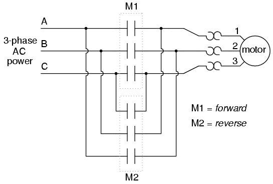
When contactor M1 is energized, the 3 phases (A, B, and C) are connected directly to terminals 1, 2, and 3 of the motor, respectively. However, when contactor M2 is energized, phases A and B are reversed, A going to motor terminal 2 and B going to motor terminal 1. This reversal of phase wires results in the motor spinning the opposite direction. Let's examine the control circuit for these two contactors:
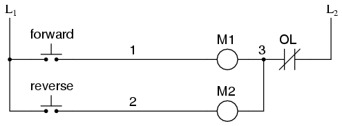
Take note of the normally-closed "OL" contact, which is the thermal overload contact activated by the "heater" elements wired in series with each phase of the AC motor. If the heaters get too hot, the contact will change from its normal (closed) state to being open, which will prevent either contactor from energizing.
This control system will work fine, so long as no one pushes both buttons at the same time. If someone were to do that, phases A and B would be short-circuited together by virtue of the fact that contactor M1 sends phases A and B straight to the motor and contactor M2 reverses them; phase A would be shorted to phase B and vice versa. Obviously, this is a bad control system design!
To prevent this occurrence from happening, we can design the circuit so that the energization of one contactor prevents the energization of the other. This is called interlocking, and it is accomplished through the use of auxiliary contacts on each contactor, as such:
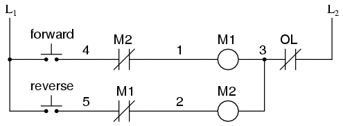
Now, when M1 is energized, the normally-closed auxiliary contact on the second rung will be open, thus preventing M2 from being energized, even if the "Reverse" pushbutton is actuated. Likewise, M1's energization is prevented when M2 is energized. Note, as well, how additional wire numbers (4 and 5) were added to reflect the wiring changes.
It should be noted that this is not the only way to interlock contactors to prevent a short-circuit condition. Some contactors come equipped with the option of a mechanical interlock: a lever joining the armatures of two contactors together so that they are physically prevented from simultaneous closure. For additional safety, electrical interlocks may still be used, and due to the simplicity of the circuit there is no good reason not to employ them in addition to mechanical interlocks.
The interlock contacts installed in the previous section's motor control circuit work fine, but the motor will run only as long as each pushbutton switch is held down. If we wanted to keep the motor running even after the operator takes his or her hand off the control switch(es), we could change the circuit in a couple of different ways: we could replace the pushbutton switches with toggle switches, or we could add some more relay logic to "latch" the control circuit with a single, momentary actuation of either switch. Let's see how the second approach is implemented, since it is commonly used in industry:
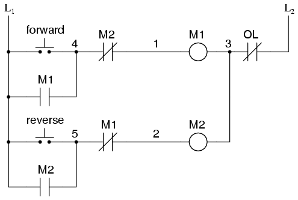
When the "Forward" pushbutton is actuated, M1 will energize, closing the normally-open auxiliary contact in parallel with that switch. When the pushbutton is released, the closed M1 auxiliary contact will maintain current to the coil of M1, thus latching the "Forward" circuit in the "on" state. The same sort of thing will happen when the "Reverse" pushbutton is pressed. These parallel auxiliary contacts are sometimes referred to as seal-in contacts, the word "seal" meaning essentially the same thing as the word latch.
However, this creates a new problem: how to stop the motor! As the circuit exists right now, the motor will run either forward or backward once the corresponding pushbutton switch is pressed, and will continue to run as long as there is power. To stop either circuit (forward or backward), we require some means for the operator to interrupt power to the motor contactors. We'll call this new switch, Stop:
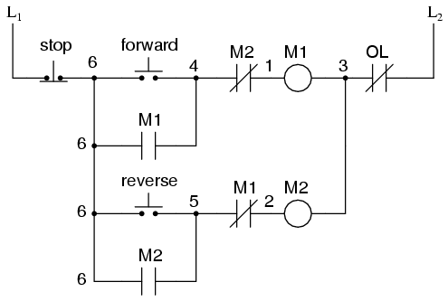
Now, if either forward or reverse circuits are latched, they may be "unlatched" by momentarily pressing the "Stop" pushbutton, which will open either forward or reverse circuit, de-energizing the energized contactor, and returning the seal-in contact to its normal (open) state. The "Stop" switch, having normally-closed contacts, will conduct power to either forward or reverse circuits when released.
So far, so good. Let's consider another practical aspect of our motor control scheme before we quit adding to it. If our hypothetical motor turned a mechanical load with a lot of momentum, such as a large air fan, the motor might continue to coast for a substantial amount of time after the stop button had been pressed. This could be problematic if an operator were to try to reverse the motor direction without waiting for the fan to stop turning. If the fan was still coasting forward and the "Reverse" pushbutton was pressed, the motor would struggle to overcome that inertia of the large fan as it tried to begin turning in reverse, drawing excessive current and potentially reducing the life of the motor, drive mechanisms, and fan. What we might like to have is some kind of a time-delay function in this motor control system to prevent such a premature startup from happening.
Let's begin by adding a couple of time-delay relay coils, one in parallel with each motor contactor coil. If we use contacts that delay returning to their normal state, these relays will provide us a "memory" of which direction the motor was last powered to turn. What we want each time-delay contact to do is to open the starting-switch leg of the opposite rotation circuit for several seconds, while the fan coasts to a halt.
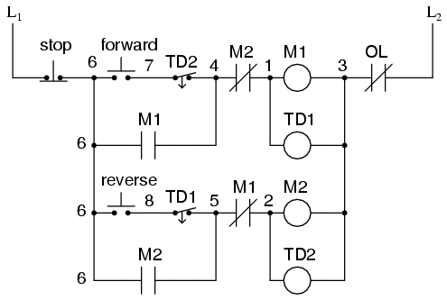
If the motor has been running in the forward direction, both M1 and TD1 will have been energized. This being the case, the normally-closed, timed-closed contact of TD1 between wires 8 and 5 will have immediately opened the moment TD1 was energized. When the stop button is pressed, contact TD1 waits for the specified amount of time before returning to its normally-closed state, thus holding the reverse pushbutton circuit open for the duration so M2 can't be energized. When TD1 times out, the contact will close and the circuit will allow M2 to be energized, if the reverse pushbutton is pressed. In like manner, TD2 will prevent the "Forward" pushbutton from energizing M1 until the prescribed time delay after M2 (and TD2) have been de-energized.
The careful observer will notice that the time-interlocking functions of TD1 and TD2 render the M1 and M2 interlocking contacts redundant. We can get rid of auxiliary contacts M1 and M2 for interlocks and just use TD1 and TD2's contacts, since they immediately open when their respective relay coils are energized, thus "locking out" one contactor if the other is energized. Each time delay relay will serve a dual purpose: preventing the other contactor from energizing while the motor is running, and preventing the same contactor from energizing until a prescribed time after motor shutdown. The resulting circuit has the advantage of being simpler than the previous example:
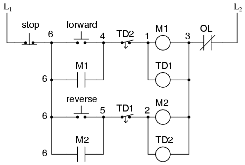
Logic circuits, whether comprised of electromechanical relays or solid-state gates, can be built in many different ways to perform the same functions. There is usually no one "correct" way to design a complex logic circuit, but there are usually ways that are better than others.
In control systems, safety is (or at least should be) an important design priority. If there are multiple ways in which a digital control circuit can be designed to perform a task, and one of those ways happens to hold certain advantages in safety over the others, then that design is the better one to choose.
Let's take a look at a simple system and consider how it might be implemented in relay logic. Suppose that a large laboratory or industrial building is to be equipped with a fire alarm system, activated by any one of several latching switches installed throughout the facility. The system should work so that the alarm siren will energize if any one of the switches is actuated. At first glance it seems as though the relay logic should be incredibly simple: just use normally-open switch contacts and connect them all in parallel with each other:
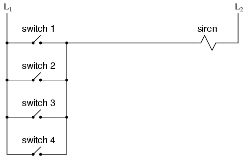
Essentially, this is the OR logic function implemented with four switch inputs. We could expand this circuit to include any number of switch inputs, each new switch being added to the parallel network, but I'll limit it to four in this example to keep things simple. At any rate, it is an elementary system and there seems to be little possibility of trouble.
Except in the event of a wiring failure, that is. The nature of electric circuits is such that "open" failures (open switch contacts, broken wire connections, open relay coils, blown fuses, etc.) are statistically more likely to occur than any other type of failure. With that in mind, it makes sense to engineer a circuit to be as tolerant as possible to such a failure. Let's suppose that a wire connection for Switch #2 were to fail open:
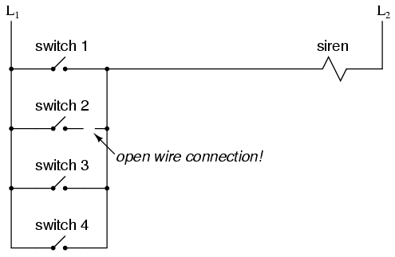
If this failure were to occur, the result would be that Switch #2 would no longer energize the siren if actuated. This, obviously, is not good in a fire alarm system. Unless the system were regularly tested (a good idea anyway), no one would know there was a problem until someone tried to use that switch in an emergency.
What if the system were re-engineered so as to sound the alarm in the event of an open failure? That way, a failure in the wiring would result in a false alarm, a scenario much more preferable than that of having a switch silently fail and not function when needed. In order to achieve this design goal, we would have to re-wire the switches so that an open contact sounded the alarm, rather than a closed contact. That being the case, the switches will have to be normally-closed and in series with each other, powering a relay coil which then activates a normally-closed contact for the siren:
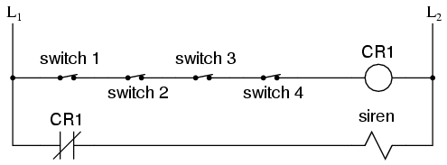
When all switches are unactuated (the regular operating state of this system), relay CR1 will be energized, thus keeping contact CR1 open, preventing the siren from being powered. However, if any of the switches are actuated, relay CR1 will de-energize, closing contact CR1 and sounding the alarm. Also, if there is a break in the wiring anywhere in the top rung of the circuit, the alarm will sound. When it is discovered that the alarm is false, the workers in the facility will know that something failed in the alarm system and that it needs to be repaired.
Granted, the circuit is more complex than it was before the addition of the control relay, and the system could still fail in the "silent" mode with a broken connection in the bottom rung, but its still a safer design than the original circuit, and thus preferable from the standpoint of safety.
This design of circuit is referred to as fail-safe, due to its intended design to default to the safest mode in the event of a common failure such as a broken connection in the switch wiring. Fail-safe design always starts with an assumption as to the most likely kind of wiring or component failure, and then tries to configure things so that such a failure will cause the circuit to act in the safest way, the "safest way" being determined by the physical characteristics of the process.
Take for example an electrically-actuated (solenoid) valve for turning on cooling water to a machine. Energizing the solenoid coil will move an armature which then either opens or closes the valve mechanism, depending on what kind of valve we specify. A spring will return the valve to its "normal" position when the solenoid is de-energized. We already know that an open failure in the wiring or solenoid coil is more likely than a short or any other type of failure, so we should design this system to be in its safest mode with the solenoid de-energized.
If its cooling water we're controlling with this valve, chances are it is safer to have the cooling water turn on in the event of a failure than to shut off, the consequences of a machine running without coolant usually being severe. This means we should specify a valve that turns on (opens up) when de-energized and turns off (closes down) when energized. This may seem "backwards" to have the valve set up this way, but it will make for a safer system in the end.
One interesting application of fail-safe design is in the power generation and distribution industry, where large circuit breakers need to be opened and closed by electrical control signals from protective relays. If a 50/51 relay (instantaneous and time overcurrent) is going to command a circuit breaker to trip (open) in the event of excessive current, should we design it so that the relay closes a switch contact to send a "trip" signal to the breaker, or opens a switch contact to interrupt a regularly "on" signal to initiate a breaker trip? We know that an open connection will be the most likely to occur, but what is the safest state of the system: breaker open or breaker closed?
At first, it would seem that it would be safer to have a large circuit breaker trip (open up and shut off power) in the event of an open fault in the protective relay control circuit, just like we had the fire alarm system default to an alarm state with any switch or wiring failure. However, things are not so simple in the world of high power. To have a large circuit breaker indiscriminately trip open is no small matter, especially when customers are depending on the continued supply of electric power to supply hospitals, telecommunications systems, water treatment systems, and other important infrastructures. For this reason, power system engineers have generally agreed to design protective relay circuits to output a closed contact signal (power applied) to open large circuit breakers, meaning that any open failure in the control wiring will go unnoticed, simply leaving the breaker in the status quo position.
Is this an ideal situation? Of course not. If a protective relay detects an overcurrent condition while the control wiring is failed open, it will not be able to trip open the circuit breaker. Like the first fire alarm system design, the "silent" failure will be evident only when the system is needed. However, to engineer the control circuitry the other way -- so that any open failure would immediately shut the circuit breaker off, potentially blacking out large potions of the power grid -- really isn't a better alternative.
An entire book could be written on the principles and practices of good fail-safe system design. At least here, you know a couple of the fundamentals: that wiring tends to fail open more often than shorted, and that an electrical control system's (open) failure mode should be such that it indicates and/or actuates the real-life process in the safest alternative mode. These fundamental principles extend to non-electrical systems as well: identify the most common mode of failure, then engineer the system so that the probable failure mode places the system in the safest condition.
Before the advent of solid-state logic circuits, logical control systems were designed and built exclusively around electromechanical relays. Relays are far from obsolete in modern design, but have been replaced in many of their former roles as logic-level control devices, relegated most often to those applications demanding high current and/or high voltage switching.
Systems and processes requiring "on/off" control abound in modern commerce and industry, but such control systems are rarely built from either electromechanical relays or discrete logic gates. Instead, digital computers fill the need, which may be programmed to do a variety of logical functions.
In the late 1960's an American company named Bedford Associates released a computing device they called the MODICON. As an acronym, it meant Modular Digital Controller, and later became the name of a company division devoted to the design, manufacture, and sale of these special-purpose control computers. Other engineering firms developed their own versions of this device, and it eventually came to be known in non-proprietary terms as a PLC, or Programmable Logic Controller. The purpose of a PLC was to directly replace electromechanical relays as logic elements, substituting instead a solid-state digital computer with a stored program, able to emulate the interconnection of many relays to perform certain logical tasks.
A PLC has many "input" terminals, through which it interprets "high" and "low" logical states from sensors and switches. It also has many output terminals, through which it outputs "high" and "low" signals to power lights, solenoids, contactors, small motors, and other devices lending themselves to on/off control. In an effort to make PLCs easy to program, their programming language was designed to resemble ladder logic diagrams. Thus, an industrial electrician or electrical engineer accustomed to reading ladder logic schematics would feel comfortable programming a PLC to perform the same control functions.
PLCs are industrial computers, and as such their input and output signals are typically 120 volts AC, just like the electromechanical control relays they were designed to replace. Although some PLCs have the ability to input and output low-level DC voltage signals of the magnitude used in logic gate circuits, this is the exception and not the rule.
Signal connection and programming standards vary somewhat between different models of PLC, but they are similar enough to allow a "generic" introduction to PLC programming here. The following illustration shows a simple PLC, as it might appear from a front view. Two screw terminals provide connection to 120 volts AC for powering the PLC's internal circuitry, labeled L1 and L2. Six screw terminals on the left-hand side provide connection to input devices, each terminal representing a different input "channel" with its own "X" label. The lower-left screw terminal is a "Common" connection, which is generally connected to L2 (neutral) of the 120 VAC power source.
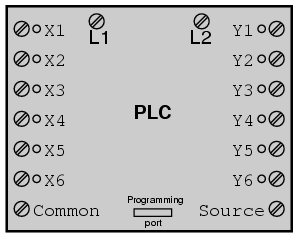
Inside the PLC housing, connected between each input terminal and the Common terminal, is an opto-isolator device (Light-Emitting Diode) that provides an electrically isolated "high" logic signal to the computer's circuitry (a photo-transistor interprets the LED's light) when there is 120 VAC power applied between the respective input terminal and the Common terminal. An indicating LED on the front panel of the PLC gives visual indication of an "energized" input:
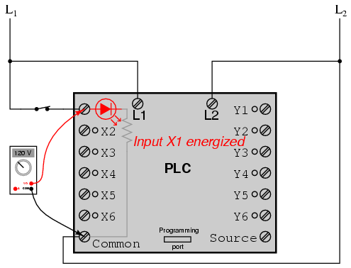
Output signals are generated by the PLC's computer circuitry activating a switching device (transistor, TRIAC, or even an electromechanical relay), connecting the "Source" terminal to any of the "Y-" labeled output terminals. The "Source" terminal, correspondingly, is usually connected to the L1 side of the 120 VAC power source. As with each input, an indicating LED on the front panel of the PLC gives visual indication of an "energized" output:
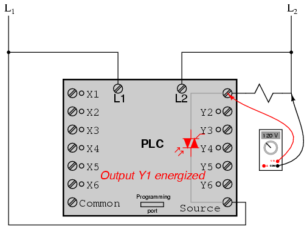
In this way, the PLC is able to interface with real-world devices such as switches and solenoids.
The actual logic of the control system is established inside the PLC by means of a computer program. This program dictates which output gets energized under which input conditions. Although the program itself appears to be a ladder logic diagram, with switch and relay symbols, there are no actual switch contacts or relay coils operating inside the PLC to create the logical relationships between input and output. These are imaginary contacts and coils, if you will. The program is entered and viewed via a personal computer connected to the PLC's programming port.
Consider the following circuit and PLC program:
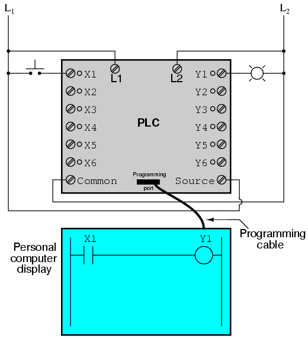
When the pushbutton switch is unactuated (unpressed), no power is sent to the X1 input of the PLC. Following the program, which shows a normally-open X1 contact in series with a Y1 coil, no "power" will be sent to the Y1 coil. Thus, the PLC's Y1 output remains de-energized, and the indicator lamp connected to it remains dark.
If the pushbutton switch is pressed, however, power will be sent to the PLC's X1 input. Any and all X1 contacts appearing in the program will assume the actuated (non-normal) state, as though they were relay contacts actuated by the energizing of a relay coil named "X1". In this case, energizing the X1 input will cause the normally-open X1 contact will "close," sending "power" to the Y1 coil. When the Y1 coil of the program "energizes," the real Y1 output will become energized, lighting up the lamp connected to it:
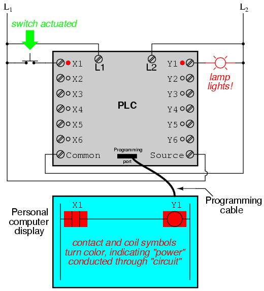
It must be understood that the X1 contact, Y1 coil, connecting wires, and "power" appearing in the personal computer's display are all virtual. They do not exist as real electrical components. They exist as commands in a computer program -- a piece of software only -- that just happens to resemble a real relay schematic diagram.
Equally important to understand is that the personal computer used to display and edit the PLC's program is not necessary for the PLC's continued operation. Once a program has been loaded to the PLC from the personal computer, the personal computer may be unplugged from the PLC, and the PLC will continue to follow the programmed commands. I include the personal computer display in these illustrations for your sake only, in aiding to understand the relationship between real-life conditions (switch closure and lamp status) and the program's status ("power" through virtual contacts and virtual coils).
The true power and versatility of a PLC is revealed when we want to alter the behavior of a control system. Since the PLC is a programmable device, we can alter its behavior by changing the commands we give it, without having to reconfigure the electrical components connected to it. For example, suppose we wanted to make this switch-and-lamp circuit function in an inverted fashion: push the button to make the lamp turn off, and release it to make it turn on. The "hardware" solution would require that a normally-closed pushbutton switch be substituted for the normally-open switch currently in place. The "software" solution is much easier: just alter the program so that contact X1 is normally-closed rather than normally-open.
In the following illustration, we have the altered system shown in the state where the pushbutton is unactuated (not being pressed):
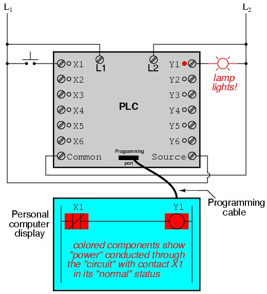
In this next illustration, the switch is shown actuated (pressed):
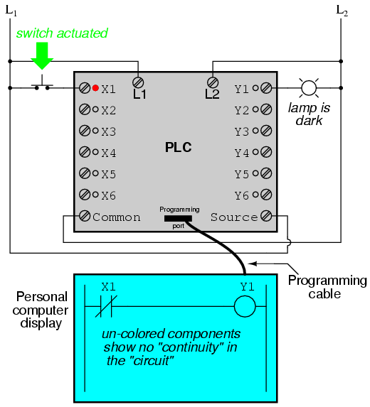
One of the advantages of implementing logical control in software rather than in hardware is that input signals can be re-used as many times in the program as is necessary. For example, take the following circuit and program, designed to energize the lamp if at least two of the three pushbutton switches are simultaneously actuated:
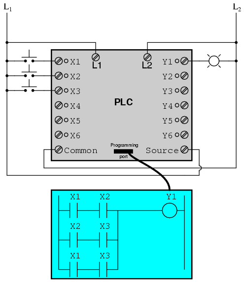
To build an equivalent circuit using electromechanical relays, three relays with two normally-open contacts each would have to be used, to provide two contacts per input switch. Using a PLC, however, we can program as many contacts as we wish for each "X" input without adding additional hardware, since each input and each output is nothing more than a single bit in the PLC's digital memory (either 0 or 1), and can be recalled as many times as necessary.
Furthermore, since each output in the PLC is nothing more than a bit in its memory as well, we can assign contacts in a PLC program "actuated" by an output (Y) status. Take for instance this next system, a motor start-stop control circuit:
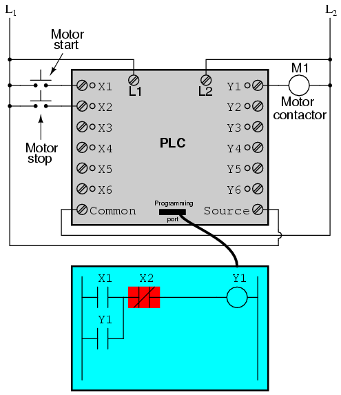
The pushbutton switch connected to input X1 serves as the "Start" switch, while the switch connected to input X2 serves as the "Stop." Another contact in the program, named Y1, uses the output coil status as a seal-in contact, directly, so that the motor contactor will continue to be energized after the "Start" pushbutton switch is released. You can see the normally-closed contact X2 appear in a colored block, showing that it is in a closed ("electrically conducting") state.
If we were to press the "Start" button, input X1 would energize, thus "closing" the X1 contact in the program, sending "power" to the Y1 "coil," energizing the Y1 output and applying 120 volt AC power to the real motor contactor coil. The parallel Y1 contact will also "close," thus latching the "circuit" in an energized state:
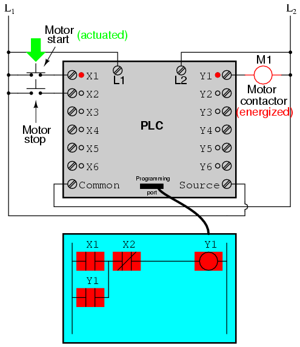
Now, if we release the "Start" pushbutton, the normally-open X1 "contact" will return to its "open" state, but the motor will continue to run because the Y1 seal-in "contact" continues to provide "continuity" to "power" coil Y1, thus keeping the Y1 output energized:
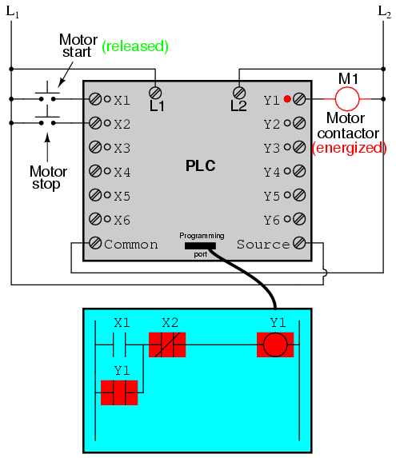
To stop the motor, we must momentarily press the "Stop" pushbutton, which will energize the X2 input and "open" the normally-closed "contact," breaking continuity to the Y1 "coil:"
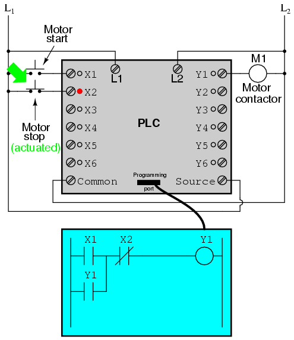
When the "Stop" pushbutton is released, input X2 will de-energize, returning "contact" X2 to its normal, "closed" state. The motor, however, will not start again until the "Start" pushbutton is actuated, because the "seal-in" of Y1 has been lost:
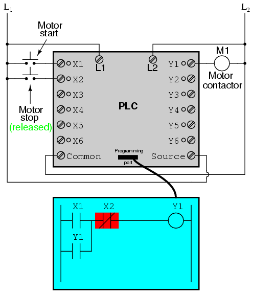
An important point to make here is that fail-safe design is just as important in PLC-controlled systems as it is in electromechanical relay-controlled systems. One should always consider the effects of failed (open) wiring on the device or devices being controlled. In this motor control circuit example, we have a problem: if the input wiring for X2 (the "Stop" switch) were to fail open, there would be no way to stop the motor!
The solution to this problem is a reversal of logic between the X2 "contact" inside the PLC program and the actual "Stop" pushbutton switch:
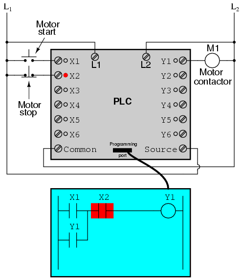
When the normally-closed "Stop" pushbutton switch is unactuated (not pressed), the PLC's X2 input will be energized, thus "closing" the X2 "contact" inside the program. This allows the motor to be started when input X1 is energized, and allows it to continue to run when the "Start" pushbutton is no longer pressed. When the "Stop" pushbutton is actuated, input X2 will de-energize, thus "opening" the X2 "contact" inside the PLC program and shutting off the motor. So, we see there is no operational difference between this new design and the previous design.
However, if the input wiring on input X2 were to fail open, X2 input would de-energize in the same manner as when the "Stop" pushbutton is pressed. The result, then, for a wiring failure on the X2 input is that the motor will immediately shut off. This is a safer design than the one previously shown, where a "Stop" switch wiring failure would have resulted in an inability to turn off the motor.
In addition to input (X) and output (Y) program elements, PLCs provide "internal" coils and contacts with no intrinsic connection to the outside world. These are used much the same as "control relays" (CR1, CR2, etc.) are used in standard relay circuits: to provide logic signal inversion when necessary.
To demonstrate how one of these "internal" relays might be used, consider the following example circuit and program, designed to emulate the function of a three-input NAND gate. Since PLC program elements are typically designed by single letters, I will call the internal control relay "C1" rather than "CR1" as would be customary in a relay control circuit:
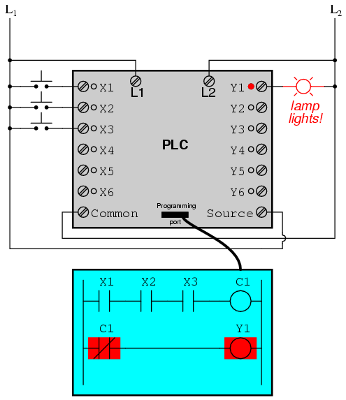
In this circuit, the lamp will remain lit so long as any of the pushbuttons remain unactuated (unpressed). To make the lamp turn off, we will have to actuate (press) all three switches, like this:
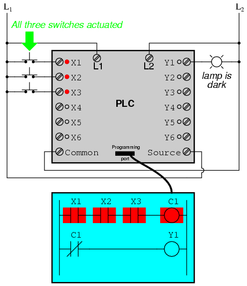
This section on programmable logic controllers illustrates just a small sample of their capabilities. As computers, PLCs can perform timing functions (for the equivalent of time-delay relays), drum sequencing, and other advanced functions with far greater accuracy and reliability than what is possible using electromechanical logic devices. Most PLCs have the capacity for far more than six inputs and six outputs. The following photograph shows several input and output modules of a single Allen-Bradley PLC.
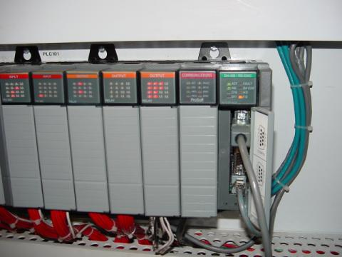
With each module having sixteen "points" of either input or output, this PLC has the ability to monitor and control dozens of devices. Fit into a control cabinet, a PLC takes up little room, especially considering the equivalent space that would be needed by electromechanical relays to perform the same functions:
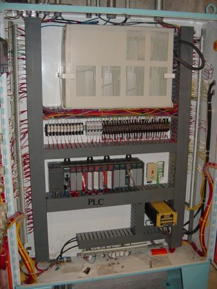
One advantage of PLCs that simply cannot be duplicated by electromechanical relays is remote monitoring and control via digital computer networks. Because a PLC is nothing more than a special-purpose digital computer, it has the ability to communicate with other computers rather easily. The following photograph shows a personal computer displaying a graphic image of a real liquid-level process (a pumping, or "lift," station for a municipal wastewater treatment system) controlled by a PLC. The actual pumping station is located miles away from the personal computer display:
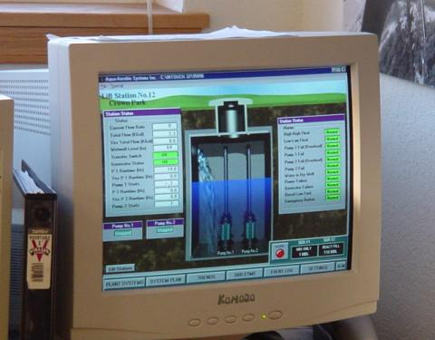
Contributors to this chapter are listed in chronological order of their contributions, from most recent to first. See Appendix 2 (Contributor List) for dates and contact information.
Roger Hollingsworth (May 2003): Suggested a way to make the PLC motor control circuit fail-safe.
Lessons In Electric Circuits copyright (C) 2000-2023 Tony R. Kuphaldt, under the terms and conditions of the CC BY License.